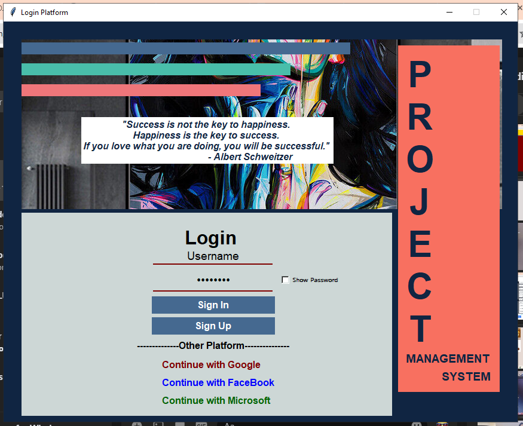
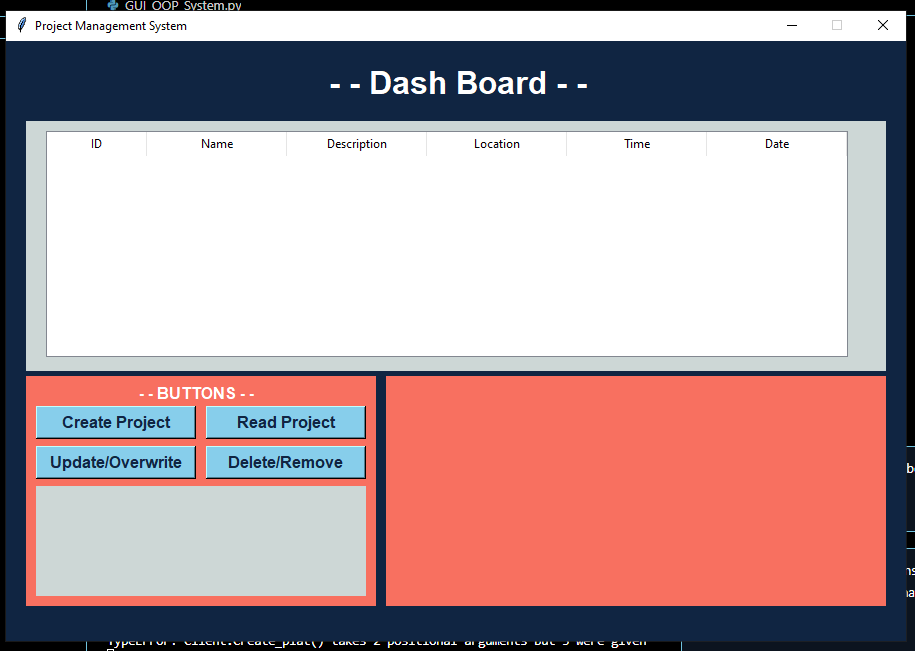

Login

This Python GUI, built with Tkinter, features a login screen where users can enter their username and password. It includes options to show or hide the password and a nicely designed interface with a login button.
Dashboard

The dashboard in this Python GUI, developed using Tkinter, serves as a central hub for managing projects efficiently. Users can create new projects, view existing ones, update project details as needed, and delete projects that are no longer relevant. The interface is designed to be intuitive and user-friendly, facilitating seamless navigation and task management. Whether organizing tasks, reviewing project statuses, or making updates, this dashboard provides comprehensive functionality to enhance productivity and organization in project management.